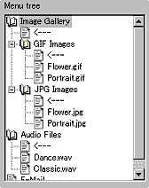
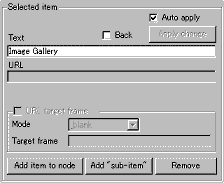
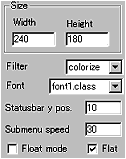
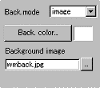
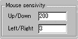
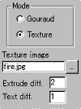
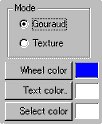

|
This applet provides one of the most strange menu
around. Well, it's a joke to actually add this menu to your web
page, however, it's still fun to play with it!
[For more technical
information about the available parameters, click here.]
Most parameters are self-explanatory and you can
always see brief description of each parameter by moving the mouse
pointer over the wizard.
 |
Before start editing the menu,
you should plan the structure of the menu for your site carefully.
Creating the site structure on Anfy wizard is simple. Add and
remove items with item names and associated URL and text. |
 |
Optionally you can
specify a frame in which a link is opened. To do this, check
the "URL target frame box" and select the target
from "mode" menu. |
|
You can also add your original frame name
at "Target frame" after choosing "other
target" at "mode". Urls can be email
addresses or file names as usual.
One thing you have to make sure is that you
always add at least one "back" item to each
node. Without this users can't go to upper trees. After add
an item, check "back" box and you have got
one back item enabled, which is shown with a left arrow sign.
Whenever you make changes to the menu tree,
you need to click "Apply change" button,
unless you have checked "Auto apply" box.
|
 |
Next, decide the applet size, filter
and font. Filters consist of smoothing filter and colorise
filter and choose one of them or disable the filter. As for
fonts, we provide two types of unique 3D fonts. Then, decide
if you want the menu texts to be extruded by checking "Flat"
box. If you would like the menu to appear in a small new window,
check "Float mode" box.
|
Next, set status bar y position, which designates
length from the top of the applet in pixel.
"Submenu speed" stands for the
speed of submenu appearance. A higher value (up to 100) results
in faster move.
 |
The background of the applet can
be filled with either mono colour, normal image, or blurred
image by selecting one of them at "Back mode".
You need to proceed the respective setting then. |
 |
You can control the "Up/Down"
and "Left/Righ" mouse sensitivity with the
boxes shown left. Higher values mean more sensitive. |
Now you move on to wheel setting. We have provided
two modes to render wheels. You can choose either Gouraud shaded
wheels or texture mapped wheels. Each choice enables or disables
some parameters, so I will describe two cases separately.
Texture mapped wheels
 |
Check "Texture" at "Mode"
boxes and specify the texture image, which must be 256*256
pixels in size.. Then set two types of text effects, "Extrude
diff." and "Text diff." The former
controls the darkness of unselected texts and the latter does
the darkness of the extruded parts of texts.
|
Gouraud shaded wheels
 |
Checking "Gouraud" activates
Gouraud shading mode, which requires "Wheel colour",
"Text colour" and "Selected colour"
settings for proper function. |
Floating menu mode
If you have selected floating menu mode, a new configurator
appears when you click "Next" button. (See below.)
When you activate this mode, the applet size itself can be as small
as 1 pixel, but MUST NOT be zero so as to embed the applet to your
HTML document.

Set the floating window size (Width, Height) and give the initial
position when a window first appears. You can set the name of the
window. If you would like to see the menu window always appear on
top of other windows, check "Always on top box", otherwise
leave it unchecked.
Proceed to the
expert menu.
|